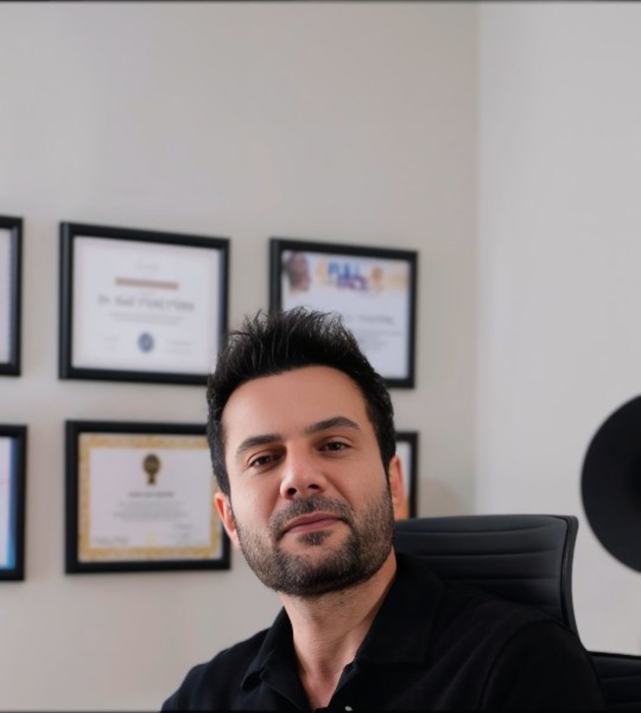

Gençlik Aşısı Uygulamaları
Cilt kalitesini ve canlılığını desteklemeye yönelik biyostimülan uygulamalar.

Genel Bakış
Cildin zamanla kaybettiği nem, elastikiyet ve canlılığı geri kazandırmak amacıyla uygulanan Gençlik Aşısı, estetik dermatolojide son yılların en çok tercih edilen yöntemlerinden biridir. İçeriğinde hyaluronik asit ve çeşitli vitaminler bulunan bu özel uygulama, cildin derin tabakalarına enjekte edilerek doğal bir yenilenme süreci başlatır.
Gençlik Aşısı Nedir?
Gençlik aşısı, cildin ihtiyacı olan nem ve besin takviyesini sağlayarak yaşlanma belirtilerini geciktiren, cilde parlaklık ve tazelik kazandıran medikal estetik uygulamadır. Düzenli uygulandığında kırışıklıkların azalmasına, cilt tonunun dengelenmesine ve sağlıklı bir görünüm elde edilmesine yardımcı olur.
Gençlik Aşısı Hangi Bölgelerde Uygulanır?
- Yüz bölgesi
- Boyun ve dekolte
- El üstleri
Bu bölgelerdeki ince çizgiler, kuruluk ve mat görünüm üzerinde oldukça etkilidir.
- Gençlik Aşısının Faydaları
Ciltte derinlemesine nemlenme sağlar.
Elastikiyet ve sıkılaşmayı artırır.
İnce kırışıklıkların azalmasına yardımcı olur.
Cilde doğal parlaklık ve canlılık kazandırır.
Kolajen üretimini destekleyerek uzun vadeli gençlik etkisi sunar.
Uygulama Süreci
Gençlik aşısı işlemi, hekimler tarafından steril koşullarda kısa sürede uygulanır.
Kimler Gençlik Aşısı Yaptırabilir?
- Cildinde kuruluk ve matlık yaşayanlar
- İnce kırışıklıklarından şikayet edenler
- Daha canlı ve genç bir cilt görünümü isteyenler
Yaşlanma belirtilerini geciktirmek isteyenler
Gençlik aşısı, hem genç yaşlarda koruyucu amaçla hem de ilerleyen yaşlarda onarıcı amaçla uygulanabilir.
Bu sitedeki içerikler yalnızca bilgilendirme amaçlıdır; kâr ve rekabet amacı içermez. Tanı ve tedavi için lütfen hekiminize başvurunuz. Tüm uygulamalar hekim muayenesi sonrasında kişiye özel olarak planlanır; sonuçlar kişiden kişiye farklılık gösterebilir.
Bunlar da ilginizi çekebilir
Muayene için randevu oluşturun
Size en uygun uygulamayı muayene ve cilt analizi sonrasında, yüz yapınız ve beklentileriniz doğrultusunda birlikte planlayalım.